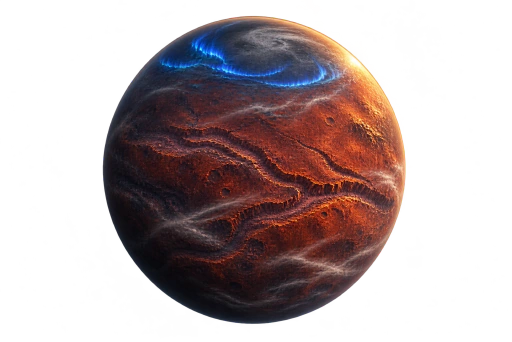

Leaderboard available
WBench
Explore model rankings across the navigation and full evaluation splits.
FudanCVL Robotics / EVALUATION
Evaluation results, organized by project.
Leaderboard available
Explore model rankings across the navigation and full evaluation splits.
These projects have preview pages. Their individual leaderboards have not been linked on this site.

World Models · Project Preview
Exploring memory, consistency, and control across longer world-model interactions.

Robotics · Project Preview
A research direction for evaluating embodied interaction and physical consequences.
World Models · Project Preview
Connecting richer interaction settings with a more diagnostic evaluation picture.

Agents · Concept Preview
A concept for studying agent behavior across realistic, multi-step tasks.